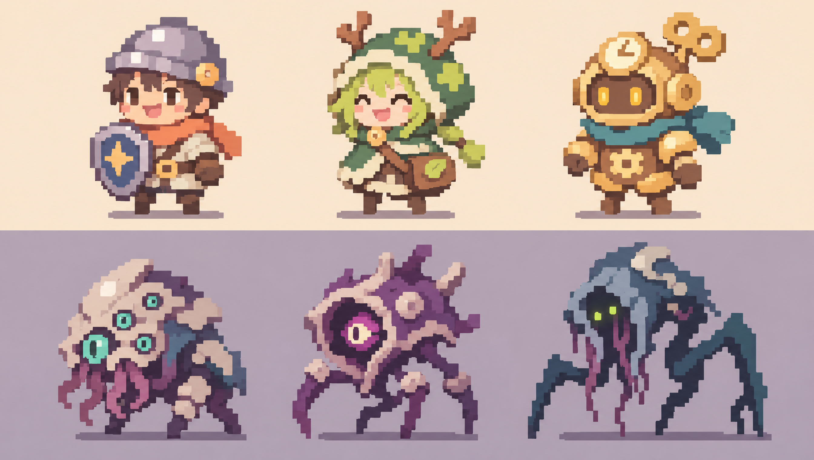
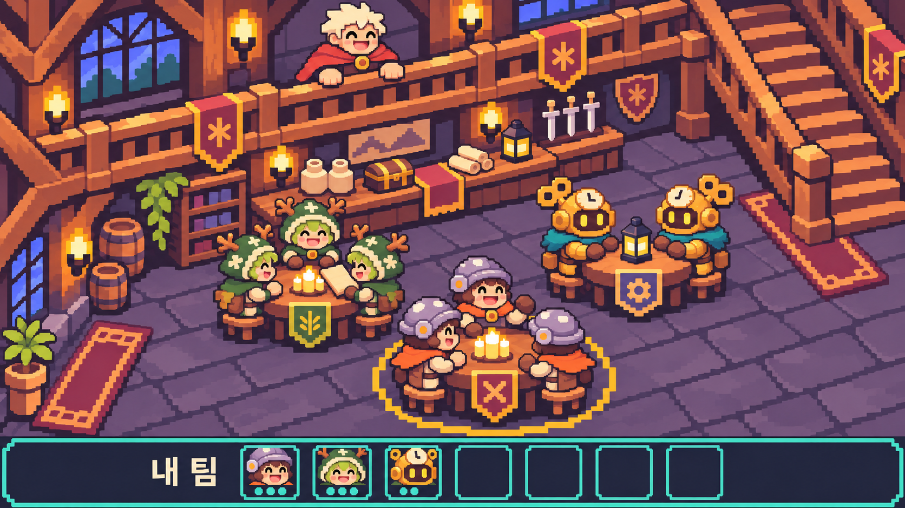
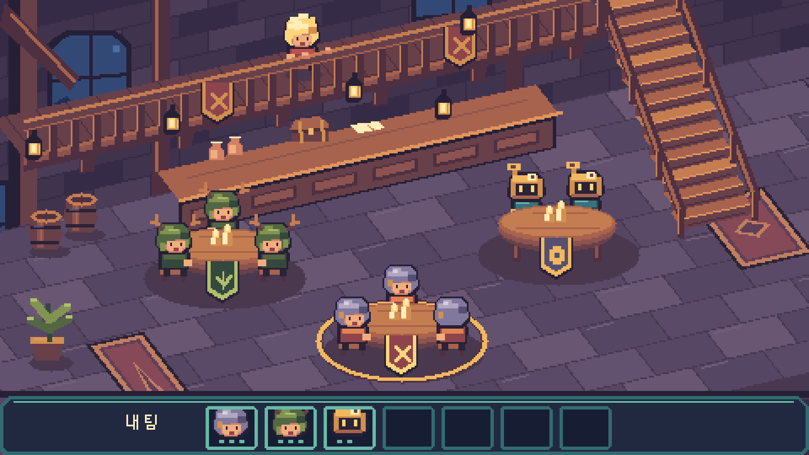
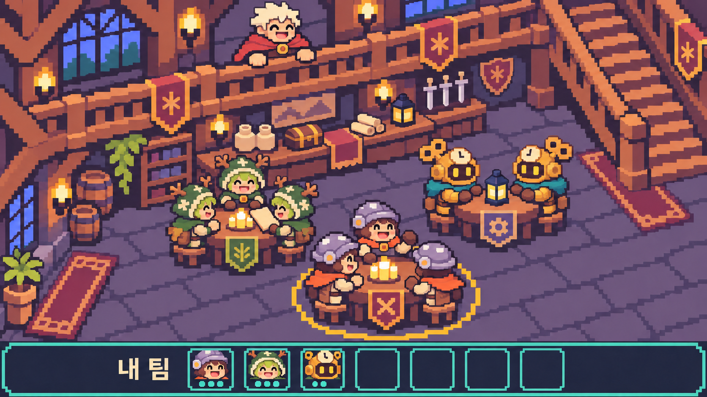
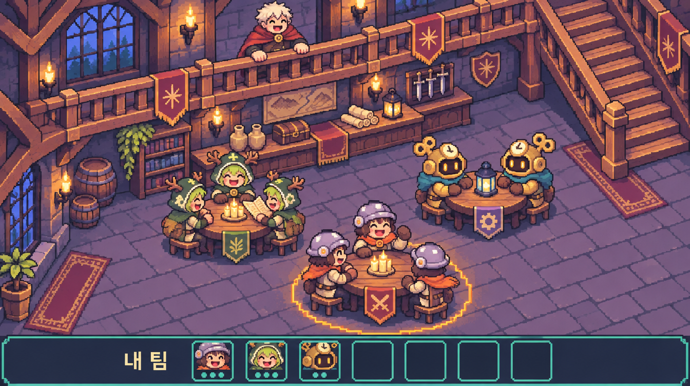
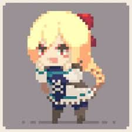

Tavern Heros 아트 방향성
용병과 공허 적 스타일 시트를 전체 그림체의 기준으로 삼는다. 큰 정사각 픽셀과 단순한 색 면으로 캐릭터와 배경을 통일하고, 아군과 적은 실루엣과 색으로 구분한다.
용병과 공허 적

- 아군. 머리는 몸 높이의 절반에 가깝게, 손발은 짧게. 표정과 방패·뿔 후드·태엽 같은 실루엣으로 직업을 구분한다.
- 적. 먹보라와 짙은 청회색을 바탕으로 눈과 일부 촉수에 밝은 포인트를 둔다.
- 공통. 머리카락, 천, 금속을 몇 개의 색 면으로 정리하고 계단형 윤곽을 유지한다.
공통 그래픽 기준
- 도트. 용병과 공허 적 시트를 참조 이미지로 넣어 생성·편집한다. 큰 픽셀 색 면, 계단형 윤곽과 짧은 명암 단계를 화면 전체에서 맞춘다.
- 명암. 기본색, 그림자, 작은 하이라이트로 형태를 잡는다. 목재와 돌바닥의 잔무늬를 줄여 캐릭터의 외곽이 먼저 읽히게 한다.
- 색. 선술집은 호박색 조명과 적갈색 목재, 공허 전장은 먹보라와 청회색을 쓴다. 용병의 밝은 살구·이끼색·청록은 두 공간에서 역할을 구분하는 색으로 쓴다.
- 상태. 전체 고용 테이블의 선택은 호박색, 하단의 내 팀은 청록색 슬롯으로 표시한다.
선술집 · 내 팀과 고용 테이블

- 카메라. 대각선 위에서 더 가까이 내려다본다. 테이블 윗면과 의자, 계단의 동선을 함께 읽을 수 있게 한다.
- 1층 고용석. 원형 테이블 하나에 고용할 기물 하나를 배치한다. 기물을 구성하는 유닛 전원이 앉고, 선택 테두리가 테이블과 의자를 함께 감싼다.
- 하단 내 팀. 고용한 기물과 전투 순서를 7칸에 상시 표시한다. 채운 칸은 대표 도트와 구성원 수, 빈 칸은 배치 여유를 보여 준다.
- 가독성 확인. 시안을 480×270으로 표시해 세 기물의 실루엣, 선택 테두리, 내 팀 7칸을 확인했다. 5테이블 배치와 Unity 내 가독성은 후속 검증 항목이다.
이전 선술집 v3–v5 비교

v5 480×270 원본 · v5 편집 소스
선술집 v4 다운로드
선술집 v3 다운로드사용자 도트 레퍼런스

레퍼런스 다운로드